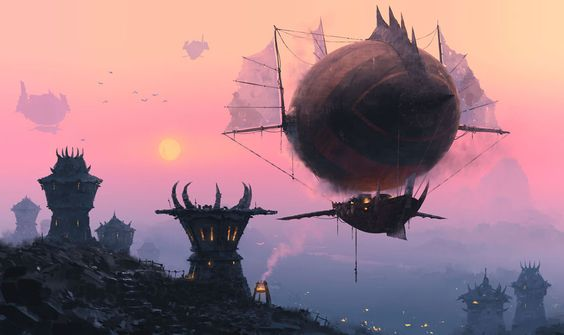

Force

Résistance

Dextérité

Magie

Ingénierie
Environnement : Variable - sur les routes
Durée de vie moyenne : 100 ans
Taille : P
Système politique : Sous la tutelle de la guilde marchande, qu'ils dirigent
Statut politique : -
Relations hostiles : -
Alliés : En bonne relation avec tous les peuples mais ne servant que leurs intérêts
Croyance : L'Originel
Force
Résistance
Dextérité
Magie
Ingénierie
Capacités innées : Leurs pas ne font pas de bruit
Facilités magiques : Chamanisme
Impossibilités : Pouvoirs extrêmes en dehors des facultés élémentaires
Les gobelins se démarquèrent par le fondement de la guilde des marchands. En effet, si leur taille est bien faible, ils se montrent ingénieux dans la construction de merveilles technologiques comme des Zeppelins fort bruyants dont l’usage permet le déplacement de marchandises le long de l’Yndrill. Ainsi, ils se firent rapidement une place dans toutes les villes habitables et étendirent leurs services à la transmission d’arts comme la musique ou la peinture, transportant les artistes sur les voies de leurs périples.
Profil type : Manipulateur - Commercial - Avare - Rusé - Vil - Fourbe
Métiers répandus : Voleurs - Négociants - Marchands
Alimentation : Omnivore - Commerce de la nourriture
Montures : Non vivante, zeppelins
Les gobelins, dont la peau verdâtre et les crocs ne manquent pas de rappeler les Trolls qui sont leurs parents, sont de frêles créatures physiquement, qui jouent de leur côté palabreur et belliqueux pour en faire une force.
Bien que la majorité des gobelins vivent sur les routes, contrôlant subtilement le monde du troc et créant une dépendance chez les Etats, certains naissent en dehors de leur structure naturelle et survivent par le vol et l’usurpation, ternissant la réputation de leurs semblables. Car, sachez le, les gobelins ne connaissent pas la fraternité, il n’y a que l’enrichissement et le petit Moi qui mérite la dépense.

Nombre d'OC de cette race sur Yndrill: -